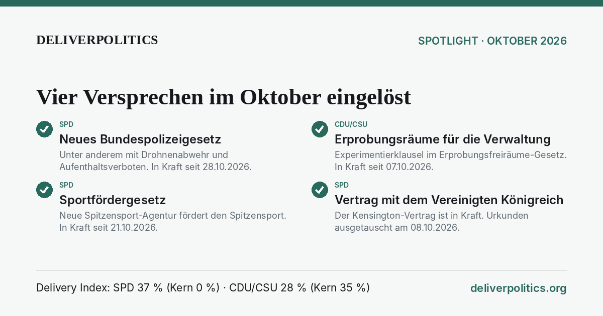

Spotlight · Oktober 2026
Vier Versprechen im Oktober eingelöst
Im Oktober 2026 sind vier weitere Zusagen aus den Wahlprogrammen wirksam geworden – drei der SPD, eine der CDU/CSU.
SPD-16 T2Neues Bundespolizeigesetz · SPD
Unter anderem mit Drohnenabwehr und Aufenthaltsverboten. In Kraft seit 28.10.2026.
Zusage: „modernes Bundespolizeigesetz“ · Gesetz zur Modernisierung des Bundespolizeigesetzes (BGBl. 2026 I Nr. 318), verkündet 27.10.2026, in Kraft 28.10.2026 (Art. 14): neues BPolG mit Quellen-TKÜ (§ 40), Drohnenabwehr (§ 39), Aufenthaltsverbot (§ 60) BGBl. 2026 I Nr. 318 ↗erfüllt seit 28.10.2026
Unter anderem mit Drohnenabwehr und Aufenthaltsverboten. In Kraft seit 28.10.2026.
Zusage: „modernes Bundespolizeigesetz“ · Gesetz zur Modernisierung des Bundespolizeigesetzes (BGBl. 2026 I Nr. 318), verkündet 27.10.2026, in Kraft 28.10.2026 (Art. 14): neues BPolG mit Quellen-TKÜ (§ 40), Drohnenabwehr (§ 39), Aufenthaltsverbot (§ 60) BGBl. 2026 I Nr. 318 ↗erfüllt seit 28.10.2026
CDU-21 T11Erprobungsräume für die Verwaltung · CDU/CSU
Experimentierklausel im Erprobungsfreiräume-Gesetz. In Kraft seit 07.10.2026.
Zusage: „Experimentierklausel für Erprobungsräume der Verwaltung“ · Erprobungsfreiräume-Gesetz (BGBl. 2026 I Nr. 289) BGBl. 2026 I Nr. 289 ↗erfüllt seit 07.10.2026
Experimentierklausel im Erprobungsfreiräume-Gesetz. In Kraft seit 07.10.2026.
Zusage: „Experimentierklausel für Erprobungsräume der Verwaltung“ · Erprobungsfreiräume-Gesetz (BGBl. 2026 I Nr. 289) BGBl. 2026 I Nr. 289 ↗erfüllt seit 07.10.2026
SPD-18 T3Sportfördergesetz · SPD
Neue Spitzensport-Agentur fördert den Spitzensport. In Kraft seit 21.10.2026.
Zusage: „Spitzensportreform fortsetzen und Sportfördergesetz weiterentwickeln“ · Sportfördergesetz – SpoFöG (BGBl. 2026 I Nr. 308), verkündet 20.10.2026, in Kraft 21.10.2026 (§ 29 Satz 2): Spitzensport-Agentur, Förderung an Anti-Doping- und Gewaltschutzauflagen gebunden BGBl. 2026 I Nr. 308 ↗erfüllt seit 21.10.2026
Neue Spitzensport-Agentur fördert den Spitzensport. In Kraft seit 21.10.2026.
Zusage: „Spitzensportreform fortsetzen und Sportfördergesetz weiterentwickeln“ · Sportfördergesetz – SpoFöG (BGBl. 2026 I Nr. 308), verkündet 20.10.2026, in Kraft 21.10.2026 (§ 29 Satz 2): Spitzensport-Agentur, Förderung an Anti-Doping- und Gewaltschutzauflagen gebunden BGBl. 2026 I Nr. 308 ↗erfüllt seit 21.10.2026
SPD-23 T1Vertrag mit dem Vereinigten Königreich · SPD
Der Kensington-Vertrag ist in Kraft. Urkunden ausgetauscht am 08.10.2026.
Zusage: „umfassendes bilaterales Abkommen mit dem Vereinigten Königreich (auf Basis Trinity House)“ · Kensington-Vertrag, Ratifikationsurkunden ausgetauscht 08.10.2026 bundesregierung.de ↗erfüllt seit 08.10.2026
Der Kensington-Vertrag ist in Kraft. Urkunden ausgetauscht am 08.10.2026.
Zusage: „umfassendes bilaterales Abkommen mit dem Vereinigten Königreich (auf Basis Trinity House)“ · Kensington-Vertrag, Ratifikationsurkunden ausgetauscht 08.10.2026 bundesregierung.de ↗erfüllt seit 08.10.2026
Delivery Index: SPD 37 % (Kernversprechen 0 %) · CDU/CSU 28 % (Kernversprechen 35 %) (Stand 31.10.2026). Spotlights beschreiben, sie bewerten nicht. Auswahl nach festen Anlässen, siehe Regeln (E35).
Grafik zum Teilen

Herunterladen: Quadrat (Instagram) · Story (Hochformat) · Querformat (LinkedIn, WhatsApp)


Zum Teilen
Texte für soziale Netzwerke. Ins Feld klicken, alles markieren (Strg+A bzw. ⌘+A) und kopieren.